Digital VLSI Design: Course Project
Team 1 “Leaky Lima” · 16nm HP PTM · VDDnom = 1.0 V · 3-bit carry-lookahead adder
Samyak Soni (2024112004) · Satvik Shrivastava (2024102029)
Shriya Kansal (2024102075) · Udhav Malpani (2024112009)
Repository: https://github.com/Shr1yaK/leaky-lima-leakage-estimation/
| Item | Value |
|---|---|
| Model file | 16nm_HP.pm (PTM, BSIM4 level 54) |
| Nominal VDD | 1.0 V (sampled ±10 %: 0.90–1.10 V) |
| Channel length | L = 16 nm; W = 1–8 × L = 16–128 nm |
| Gate sizing | Wn = 2L = 32 nm, Wp = 4L = 64 nm (interior of the training range) |
| Test circuit | 3-bit carry-lookahead adder: 42 library gates, 204 transistors, 7 inputs (128 vectors) |
| Simulator | ngspice-45.2 : Circuit level simulation program |
| Software | Python 3.14.8, scikit-learn 1.9.0, LightGBM 4.7.0, numpy 2.5.4, pandas 3.1.1 |
| Platform | macOS-27.0.1-arm64-arm-64bit-Mach-O, 11 cores |
| SPICE options | .options gmin=1e-18 abstol=1e-18 reltol=1e-6 vntol=1e-9 in every netlist |
Evidence labels. Each claim in this report carries one of four labels.
Simulated values are ngspice operating-point (.op) results, produced with
ngspice-45.2 and the options line in the table above. Estimated values are outputs
of the ML models and quantities computed from them, such as the leakage of a gate. Measured values are
run times and counts taken from the logs, recorded on macOS-27.0.1-arm64-arm-64bit-Mach-O with 11 cores. Assumed statements are
design inputs and physical explanations that we did not test. Every error in this report compares an estimated
value with the simulated value for the same case, so we do not repeat the labels for errors.
Leakage definition. We define the leakage of a gate or circuit as the total static power divided by
VDD, Pstatic/VDD = Σ VkIk/VDD, summed over the supply and the input sources.
We include the input sources because the driving gate must supply the gate-tunnelling current into an input pin,
so this current is part of the leakage of the whole circuit. With this definition, the leakages of the gates add
up to the leakage of the circuit. We also recorded the supply current I(VDD) (the *_ivdd columns of
results/gate_samples.csv). Its median error per gate case ranges from 0.72 to
2.47 % (gate_results.csv). Terminal currents are positive into the device, so
Id+Ig+Is+Ib = 0.
Accuracy metric. We define the mean accuracy of a group of simulations as 100 % minus the mean of |ML/SPICE − 1|. We report the median, the 95th percentile and the maximum of the same error next to it.
We drew 10,000 samples for each of the four cases, with every parameter independent. VDD was drawn first,
uniform within ±10 % of nominal. Vd and Vs are uniform in [0, VDD], W is uniform in
[1, 8]×L and T is uniform in [−40, 125] °C. Each of the five process parameters (vth0, toxe,
ndep, u0, xj) is uniform within ±10 % of the model-card nominal, with separate draws for NMOS and PMOS.
The case fixes Vg and Vb. In an ON device Vg is VDD for NMOS and 0 for PMOS, and in an
OFF device the reverse. The body is at the rail of the device type. All draws use fixed seeds
(SEED_DATA = 2026). These 10,000-row files are deliverable 1.
Uniform sampling rarely places a terminal on a rail: 3 of the 10,000 NMOS OFF samples have Vs within 2 % of 0 and Vd within 2 % of VDD (measured count). In a gate, the leaking transistor has its source on a rail and its drain at the output, which is near 0 or VDD, so a model trained only on uniform samples has little data where the gates operate. We therefore added a rail-focused supplement of 5,000 samples per case. In it, Vd and Vs are each exactly 0 or VDD in one third of the samples and otherwise follow an arcsine law, which is dense near both rails. In half of its samples we moved Vg up to 10 % of VDD away from its ideal level, because a gate driven by another gate sees a logic 0 a few tens of mV above ground. We also drew a deployment-check set of 2,000 samples per case at the gate widths (Wn = 2L, Wp = 4L) and at gate-like rail voltages, and used it only for validation and test. No gate or circuit simulation entered training or model selection.
The single-transistor netlist of each case (netlists/single_*.cir) holds one transistor with a
separate voltage source on every terminal, so ngspice reports all four terminal currents directly. To avoid the
start-up time of ngspice for every sample, one process runs a batch of samples. Between .op analyses it
changes the process parameters with altermod and the width, voltages and temperature with
alter. A self-check re-simulates samples as standalone netlists and reproduces the batch results
(development log, CHANGES.md). We also recorded the internal BSIM4 current components
(Ids, Igs, Igd, Igcs, Igcd, Igb, GIDL and GISL,
Isub and the junction currents) and regrouped them into six physical bipoles (ds, gs, gd, gb, db,
sb). The bipole currents rebuild the four terminal currents exactly. We generated the gate and circuit netlists
from the same transistor list that the ML side uses, so SPICE and ML share one topology. Each gate and circuit
simulation starts from a logic-level .nodeset; Section 6 gives the reason.
We split each 10,000-row dataset 70/15/15 (7,000 training, 1,500 validation and 1,500 test samples) with
SEED_SPLIT = 42. We split the rail supplement in the same way and added its training
part to the training data. The test parts were used once, after model selection. The split indices are in
results/split_*.npz.
| Case | samples | median |ΣI| (A) | max |ΣI| (A) | median |ΣI|/max|I| | p95 |ΣI|/max|I| |
|---|---|---|---|---|---|
| NMOS ON | 10000 | 1.76×10-14 | 9.88×10-13 | 9.78×10-10 | 4.34×10-8 |
| NMOS OFF | 10000 | 5.62×10-20 | 4.27×10-15 | 8.93×10-10 | 3.71×10-9 |
| PMOS ON | 10000 | 7.60×10-15 | 9.86×10-13 | 8.63×10-10 | 1.49×10-8 |
| PMOS OFF | 10000 | 9.81×10-17 | 8.38×10-15 | 2.09×10-4 | 2.04×10-2 |
For NMOS ON, NMOS OFF and PMOS ON, the median ratio |ΣI| / max|I| is at most 9.78×10-10 and the 95th percentile is at most 4.34×10-8 (simulated). For PMOS OFF, the median ratio is 2.09×10-4, the 95th percentile 2.04×10-2 and the maximum 14.5 %. In the PMOS OFF samples with the largest ratios, every terminal current is near 10−15 A, and the residual is limited by the solver tolerances (assumed: abstol = 10−18 A, amplified by the convergence check). The largest absolute residual in any case is 9.88×10-13 A.
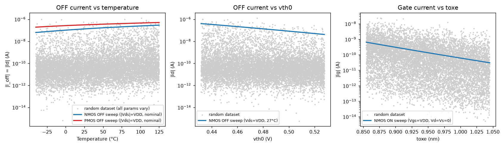
The terminal currents change sign and span many orders of magnitude, and Is is often the difference of two much larger currents of opposite sign (simulated data). We assume that this makes a direct regression of the terminal currents inaccurate, because a model of log|I| cannot follow a sign change or a small difference of large terms; Section 3.4 measures the resulting error. We therefore split each transistor into six bipoles. Each bipole is a passive two-terminal element, and its current flows from its higher to its lower terminal. For each bipole the model learns the conductance G = I/V, in the form log G per unit width, and the terminal currents follow from KCL: Id = Ids − Igd + Idb, and so on. As a result, KCL holds exactly, every bipole current has the correct sign, and I = 0 at V = 0. Each case has five sub-models with shared inputs: channel (ds), gate-to-diffusion tunnelling (gs and gd, one model evaluated twice), gate-to-body, drain junction and source junction.
Features. Each sub-model takes VDD, T in K, log(Weff/L), ΔVg/VT (the offset of the gate from its ideal level), the five process parameters relative to nominal, the two terminal voltages of the bipole, V/VT and log|V|. It also takes three Arrhenius-type inputs, 1/VT, Vth0/VT and (VDD−Vth0)/VT, because the sub-threshold current depends on exp(−Vth/nVT) (assumed physical model).
Width normalisation. We chose the width law of each mechanism from a nominal ngspice width sweep (simulated):
Without the clamp, the gate results carried a +2 % bias (development log, CHANGES.md).
All families use the same bipole targets and features. We selected the model of each case by a score computed on three validation sets: uniform, rail-focused and deployment check. For each set, the score is the mean over the four currents of (median + 95th percentile)/2 of the relative error, and the final score is the mean over the three sets.
| Case | Model | hyper-params | id R² | id med % | id p95 % | ig R² | ig med % | ig p95 % | is R² | is med % | is p95 % | ib R² | ib med % | ib p95 % |
|---|---|---|---|---|---|---|---|---|---|---|---|---|---|---|
| NMOS OFF | MLP | 3×64, 5 seeds | 1.0000 | 0.18 | 2.30 | 1.0000 | 0.09 | 0.31 | 1.0000 | 0.18 | 2.07 | 0.9999 | 0.14 | 1.02 |
| NMOS OFF | LightGBM | leaves=31 | 0.9942 | 1.61 | 20.26 | 1.0000 | 0.75 | 2.27 | 0.9967 | 1.52 | 19.22 | 0.9982 | 0.57 | 10.02 |
| NMOS OFF | Polynomial + ridge | degree=3 | 1.0000 | 0.13 | 1.77 | 1.0000 | 0.08 | 0.20 | 0.9910 | 0.15 | 2.06 | 0.7564 | 11.19 | 61.61 |
| NMOS OFF | Random forest | trees=300 | 0.9867 | 2.06 | 49.92 | 0.9999 | 0.84 | 3.47 | 0.9912 | 2.23 | 48.49 | 0.9931 | 0.57 | 23.72 |
| NMOS ON | MLP | 3×64, 5 seeds | 1.0000 | 0.79 | 3.73 | 1.0000 | 0.25 | 1.17 | 1.0000 | 0.79 | 3.73 | 1.0000 | 0.39 | 1.46 |
| NMOS ON | LightGBM | leaves=31 | 1.0000 | 2.48 | 28.12 | 0.9995 | 3.71 | 12.09 | 1.0000 | 2.49 | 27.94 | 0.9987 | 6.73 | 24.70 |
| NMOS ON | Polynomial + ridge | degree=4 | 0.9999 | 7.34 | 26.28 | 0.9958 | 10.34 | 33.03 | 1.0000 | 7.33 | 26.22 | 0.9981 | 8.93 | 25.31 |
| NMOS ON | Random forest | trees=300 | 0.9998 | 6.07 | 56.88 | 0.9964 | 8.90 | 30.95 | 0.9999 | 6.07 | 56.26 | 0.9894 | 18.56 | 67.03 |
| PMOS OFF | MLP | 3×64, 5 seeds | 1.0000 | 0.28 | 2.09 | 0.9936 | 0.28 | 1.49 | 1.0000 | 0.51 | 2.33 | 0.9999 | 0.34 | 1.33 |
| PMOS OFF | LightGBM | leaves=31 | 0.9990 | 6.01 | 42.80 | 0.9935 | 1.17 | 3.69 | 0.9979 | 10.03 | 46.77 | 0.9962 | 1.07 | 12.40 |
| PMOS OFF | Polynomial + ridge | degree=3 | 0.9998 | 1.79 | 18.36 | 0.9936 | 0.22 | 1.55 | 0.9977 | 1.26 | 25.22 | 0.9689 | 11.31 | 60.79 |
| PMOS OFF | Random forest | trees=300 | 0.9946 | 17.34 | 139.94 | 0.9934 | 1.51 | 5.40 | 0.9954 | 28.46 | 171.13 | 0.9879 | 1.65 | 25.27 |
| PMOS ON | MLP | 3×64, 5 seeds | 1.0000 | 0.64 | 2.82 | 1.0000 | 0.43 | 1.53 | 1.0000 | 0.64 | 2.81 | 1.0000 | 0.39 | 1.33 |
| PMOS ON | LightGBM | leaves=31 | 1.0000 | 2.44 | 20.01 | 0.9991 | 7.23 | 22.43 | 1.0000 | 2.44 | 19.96 | 0.9991 | 6.36 | 20.70 |
| PMOS ON | Polynomial + ridge | degree=4 | 1.0000 | 6.96 | 23.12 | 0.9969 | 8.96 | 27.97 | 0.9998 | 6.96 | 23.22 | 0.9982 | 8.98 | 27.36 |
| PMOS ON | Random forest | trees=300 | 0.9999 | 6.62 | 40.84 | 0.9934 | 18.36 | 65.26 | 0.9999 | 6.62 | 40.81 | 0.9937 | 16.32 | 59.30 |
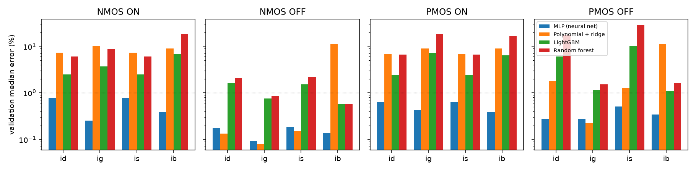
Choice. The MLP has the lowest selection score in all four cases. Over the 16 combinations of case and current, the median error of the best other family is 0.8 to 17.3 times the median error of the MLP, and its 95th-percentile error is 0.6 to 17.0 times that of the MLP (Table 2). The MLP has a higher median error than another family in 4 of the 16 combinations: NMOS OFF Id (Polynomial + ridge, ratio 0.75); NMOS OFF Ig (Polynomial + ridge, ratio 0.86); NMOS OFF Is (Polynomial + ridge, ratio 0.82); PMOS OFF Ig (Polynomial + ridge, ratio 0.79). In NMOS OFF, the largest median margin of the MLP is on Ib (4.1×). In PMOS OFF, the largest median margin of the MLP is on Id (6.5×). The polynomial model has a median Ib error of 8.93 to 11.31 % in all four cases. We assume that the smooth dependence of log G on the inputs suits a tanh network, and that the piecewise-constant fits of the tree models cause their larger 95th-percentile errors (assumed). The selected MLP has 64 units per hidden layer in 4 of the four cases.
| Case | Model | id med % | ig med % | is med % | ib med % | id p95 % | ig p95 % | is p95 % | ib p95 % |
|---|---|---|---|---|---|---|---|---|---|
| NMOS ON | MLP | 0.69 | 0.24 | 0.69 | 0.37 | 3.92 | 1.07 | 3.87 | 1.38 |
| NMOS OFF | MLP | 0.17 | 0.10 | 0.18 | 0.14 | 2.23 | 0.31 | 2.02 | 1.06 |
| PMOS ON | MLP | 0.59 | 0.41 | 0.59 | 0.38 | 2.90 | 1.60 | 2.90 | 1.39 |
| PMOS OFF | MLP | 0.32 | 0.30 | 0.53 | 0.33 | 2.00 | 1.70 | 2.26 | 1.45 |
| Case | id med % | ig med % | is med % | ib med % | id p95 % | ig p95 % | is p95 % | ib p95 % |
|---|---|---|---|---|---|---|---|---|
| NMOS ON | 1.60 | 0.73 | 1.59 | 0.38 | 7.25 | 1.77 | 7.16 | 1.25 |
| NMOS OFF | 0.83 | 0.12 | 0.83 | 2.57 | 2.66 | 0.47 | 2.71 | 15.23 |
| PMOS ON | 0.78 | 0.38 | 0.78 | 0.39 | 4.08 | 1.52 | 4.02 | 1.52 |
| PMOS OFF | 0.86 | 0.38 | 0.86 | 2.93 | 3.10 | 1.71 | 3.10 | 14.29 |
On the uniform test set, the median error is at most 0.69 % for every current and case. On the deployment-check test set, the median error of Id and Is is at most 1.60 % (NMOS ON), and it is below 1 % in 3 of the four cases. The median Ib error in the OFF cases of this set is 2.57 % for NMOS OFF and 2.93 % for PMOS OFF. The median |Ib| of these cases is 2.74×10-14 A and 6.37×10-14 A, against a median |Id| of 1.25×10-7 A and 6.88×10-7 A (simulated). For PMOS OFF, Ig is above the 10−14 A evaluation floor in 31 % of the test samples and Is in 76 %, and the errors of these currents refer to those samples.
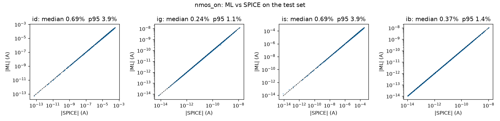
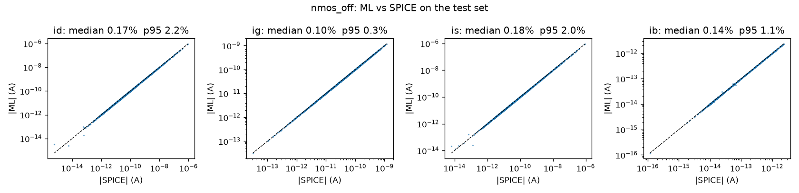
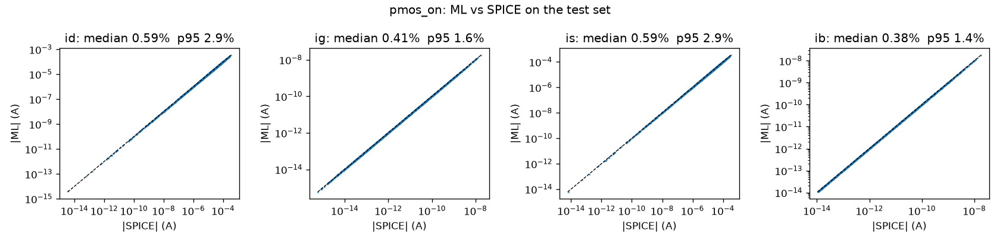
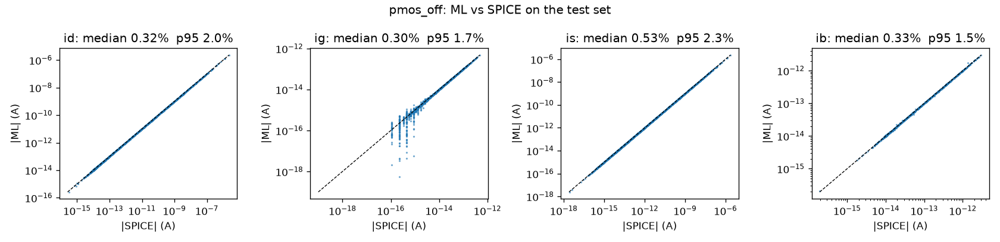
In the ablation, we trained the same MLP (same size, same rows, same ensemble size) to predict each terminal current directly, on an asinh scale. Its median error is 24.6 times that of the bipole model (median over the 16 currents). In the learning curve, we retrained the chosen recipe on 500 to 7000 uniform samples, each with half as many rail samples. The median error is within 25 % plus 0.05 percentage points of the error of the full-size model from the following numbers of uniform training samples: NMOS ON 2000, NMOS OFF 4000, PMOS ON 2000, PMOS OFF 4000. We therefore take a few thousand ngspice samples per case as the dataset size needed for this accuracy.
| Case | current | direct med % | direct p95 % | bipole med % | bipole p95 % |
|---|---|---|---|---|---|
| NMOS ON | id | 5.54 | 37.04 | 0.79 | 3.73 |
| NMOS ON | ig | 8.05 | 48.10 | 0.25 | 1.17 |
| NMOS ON | is | 5.09 | 32.94 | 0.79 | 3.73 |
| NMOS ON | ib | 9.63 | 42.91 | 0.39 | 1.46 |
| NMOS OFF | id | 6.32 | 91.95 | 0.18 | 2.30 |
| NMOS OFF | ig | 3.05 | 13.89 | 0.09 | 0.31 |
| NMOS OFF | is | 6.41 | 97.44 | 0.18 | 2.07 |
| NMOS OFF | ib | 0.50 | 9.92 | 0.14 | 1.02 |
| PMOS ON | id | 5.78 | 30.71 | 0.64 | 2.82 |
| PMOS ON | ig | 10.56 | 44.60 | 0.43 | 1.53 |
| PMOS ON | is | 6.13 | 31.71 | 0.64 | 2.81 |
| PMOS ON | ib | 9.73 | 38.08 | 0.39 | 1.33 |
| PMOS OFF | id | 9.02 | 76.19 | 0.28 | 2.09 |
| PMOS OFF | ig | 6.19 | 23.03 | 0.28 | 1.49 |
| PMOS OFF | is | 12.41 | 88.13 | 0.51 | 2.33 |
| PMOS OFF | ib | 0.81 | 11.70 | 0.34 | 1.33 |
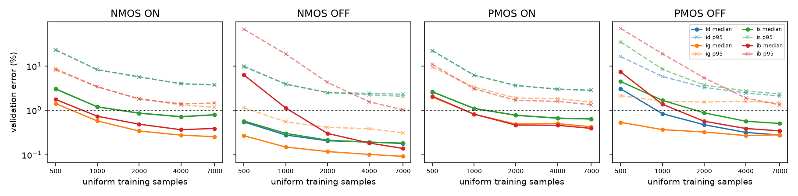
| Case | current | n = 500 | n = 1000 | n = 2000 | n = 4000 | n = 7000 |
|---|---|---|---|---|---|---|
| NMOS OFF | ib | 6.24 | 1.13 | 0.30 | 0.18 | 0.14 |
| NMOS OFF | id | 0.55 | 0.28 | 0.21 | 0.19 | 0.18 |
| NMOS OFF | ig | 0.27 | 0.15 | 0.12 | 0.10 | 0.09 |
| NMOS OFF | is | 0.57 | 0.30 | 0.21 | 0.19 | 0.18 |
| NMOS ON | ib | 1.76 | 0.73 | 0.49 | 0.36 | 0.39 |
| NMOS ON | id | 3.03 | 1.19 | 0.86 | 0.72 | 0.79 |
| NMOS ON | ig | 1.42 | 0.57 | 0.34 | 0.28 | 0.25 |
| NMOS ON | is | 3.03 | 1.19 | 0.86 | 0.72 | 0.79 |
| PMOS OFF | ib | 7.35 | 1.37 | 0.57 | 0.39 | 0.34 |
| PMOS OFF | id | 3.05 | 0.84 | 0.47 | 0.32 | 0.28 |
| PMOS OFF | ig | 0.54 | 0.37 | 0.32 | 0.27 | 0.28 |
| PMOS OFF | is | 4.45 | 1.68 | 0.88 | 0.57 | 0.51 |
| PMOS ON | ib | 2.07 | 0.82 | 0.46 | 0.46 | 0.39 |
| PMOS ON | id | 2.61 | 1.10 | 0.77 | 0.67 | 0.64 |
| PMOS ON | ig | 2.00 | 0.82 | 0.49 | 0.50 | 0.43 |
| PMOS ON | is | 2.61 | 1.10 | 0.77 | 0.67 | 0.64 |
We simulated each of the 18 gate and input cases at the same 200 random corners. A corner is one draw of VDD, T
and the process parameters, with one draw shared by all NMOS and one by all PMOS. As the brief specifies, the main
ML estimate takes the internal and output voltages recorded in ngspice, derives the terminal voltages of every
transistor from them, and sums V·I over the estimated bipole currents. In an extension (Section 7.1) we also
solved the node voltages with the ML models alone. results/gate_samples.csv holds both sets of node
voltages.
| Gate | inputs | SPICE median (A) | ML median (A) | bias % | median err % | p95 err % | max err % | ML-solved med % | ML-solved p95 % | max |ΔV| node (mV) |
|---|---|---|---|---|---|---|---|---|---|---|
| INV | 0 | 1.61×10-7 | 1.61×10-7 | -0.11 | 0.70 | 2.43 | 4.97 | 0.66 | 2.40 | 0.18 |
| INV | 1 | 8.08×10-7 | 8.15×10-7 | +0.46 | 0.79 | 3.06 | 5.73 | 0.79 | 2.90 | 1.60 |
| NAND2 | 00 | 7.92×10-10 | 7.91×10-10 | -0.23 | 0.34 | 1.17 | 1.74 | 0.43 | 1.43 | 1.26 |
| NAND2 | 01 | 1.57×10-7 | 1.55×10-7 | -0.19 | 0.65 | 2.30 | 4.51 | 0.66 | 2.25 | 0.43 |
| NAND2 | 10 | 1.72×10-8 | 1.74×10-8 | +0.79 | 0.86 | 2.82 | 4.19 | 0.82 | 2.60 | 1.60 |
| NAND2 | 11 | 1.34×10-6 | 1.35×10-6 | +0.18 | 0.88 | 2.71 | 4.25 | 0.81 | 2.13 | 2.47 |
| NOR2 | 00 | 3.18×10-7 | 3.13×10-7 | -0.11 | 0.65 | 2.35 | 4.72 | 0.69 | 2.29 | 0.54 |
| NOR2 | 01 | 6.48×10-7 | 6.60×10-7 | +0.11 | 0.88 | 3.04 | 5.18 | 0.64 | 2.51 | 1.29 |
| NOR2 | 10 | 4.92×10-8 | 4.96×10-8 | +0.14 | 0.63 | 2.34 | 2.97 | 0.63 | 2.44 | 1.75 |
| NOR2 | 11 | 9.47×10-10 | 9.58×10-10 | +0.31 | 0.62 | 1.87 | 2.44 | 0.96 | 2.44 | 1.79 |
| AND2 | 00 | 8.08×10-7 | 8.16×10-7 | +0.46 | 0.79 | 3.06 | 5.73 | 0.79 | 2.90 | 1.60 |
| AND2 | 01 | 1.04×10-6 | 1.04×10-6 | +0.22 | 0.66 | 2.57 | 5.40 | 0.66 | 2.41 | 1.67 |
| AND2 | 10 | 8.25×10-7 | 8.34×10-7 | +0.44 | 0.75 | 3.01 | 5.71 | 0.77 | 2.84 | 1.62 |
| AND2 | 11 | 1.70×10-6 | 1.71×10-6 | +0.27 | 0.76 | 2.30 | 3.87 | 0.71 | 2.00 | 2.47 |
| OR2 | 00 | 1.22×10-6 | 1.23×10-6 | -0.01 | 0.59 | 2.32 | 5.08 | 0.58 | 2.16 | 1.57 |
| OR2 | 01 | 8.83×10-7 | 8.83×10-7 | +0.11 | 0.75 | 2.46 | 4.75 | 0.60 | 2.28 | 1.29 |
| OR2 | 10 | 2.18×10-7 | 2.18×10-7 | +0.00 | 0.61 | 2.19 | 4.42 | 0.58 | 2.14 | 1.75 |
| OR2 | 11 | 1.62×10-7 | 1.62×10-7 | -0.10 | 0.70 | 2.42 | 4.97 | 0.66 | 2.40 | 1.79 |
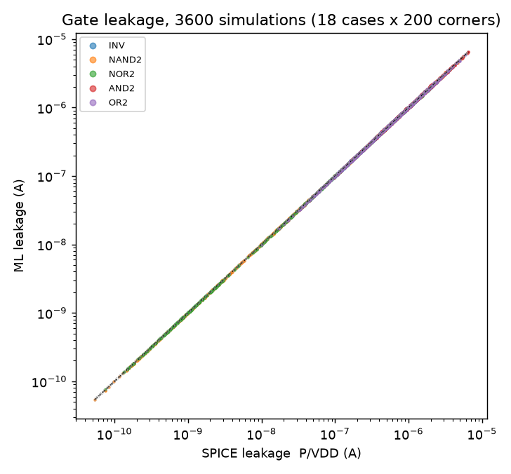
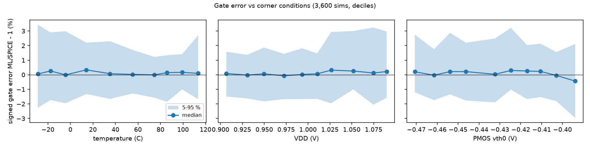
Accuracy by gate and input. The mean accuracy per gate is INV 99.01 %, NAND2 99.15 %, NOR2 99.11 %, AND2 99.03 %, OR2 99.14 %. The four cases with the largest 95th-percentile error are INV 1 (3.06 %), AND2 00 (3.06 %), NOR2 01 (3.04 %), AND2 10 (3.01 %). The smallest is NAND2 00 (1.17 %). The 95th-percentile errors of all 18 cases lie between 1.17 and 3.06 %.
The simulated medians show the stack effect. NAND2 00 leaks 204 times less than INV with input 0 and 1020 times less than INV with input 1. NOR2 11 leaks 171 and 853 times less. In both gates two OFF transistors are in series, and we assume that the internal node then moves to a voltage that reverse-biases the upper OFF device (assumed). The ML-solved internal node voltages differ from ngspice by at most 2.47 mV (median 0.051 mV), so the models reproduce this shift of the node voltage.
We built the adder only from library gates. The propagate signals pi = ai⊕bi use XOR gates made of four NAND2 each, and the generate signals gi = aibi use AND2. Each carry is computed directly from g, p and c0, for example c3 = g2+p2g1+p2p1g0+p2p1p0c0 from AND2 and OR2 trees, and si = pi⊕ci. The adder has 42 gates and 204 transistors, and a unit test checks that it adds correctly for all 128 inputs. We simulated the full netlist in ngspice for all 128 vectors at the same 200 corners (25,600 operating points, 112 s wall-clock time on 11 cores, measured). For the hierarchical estimate that the brief specifies, we propagated the logic values, looked up the Part B ML leakage of each gate for its input combination and corner, and summed the 42 values.
| Comparison | SPICE median (A) | ML median (A) | bias % | median err % | p95 err % | max err % | mean acc % |
|---|---|---|---|---|---|---|---|
| hierarchical ML (gate sum) vs SPICE circuit | 3.16×10-5 | 3.07×10-5 | -2.56 | 2.59 | 10.41 | 21.20 | 96.41 |
| SPICE gate sum vs SPICE circuit (hierarchy error) | 3.16×10-5 | 3.07×10-5 | -2.64 | 2.64 | 10.04 | 20.79 | 96.42 |
| hierarchical ML (gate sum) vs SPICE gate sum (ML error) | 3.07×10-5 | 3.07×10-5 | +0.18 | 0.68 | 2.51 | 4.95 | 99.13 |
| flat ML on circuit voltages vs SPICE circuit | 3.16×10-5 | 3.16×10-5 | +0.14 | 0.68 | 2.46 | 4.85 | 99.14 |
| levels-aware ML hierarchy vs SPICE circuit (SPICE-free) | 3.16×10-5 | 3.17×10-5 | +0.28 | 0.66 | 2.18 | 3.52 | 99.21 |
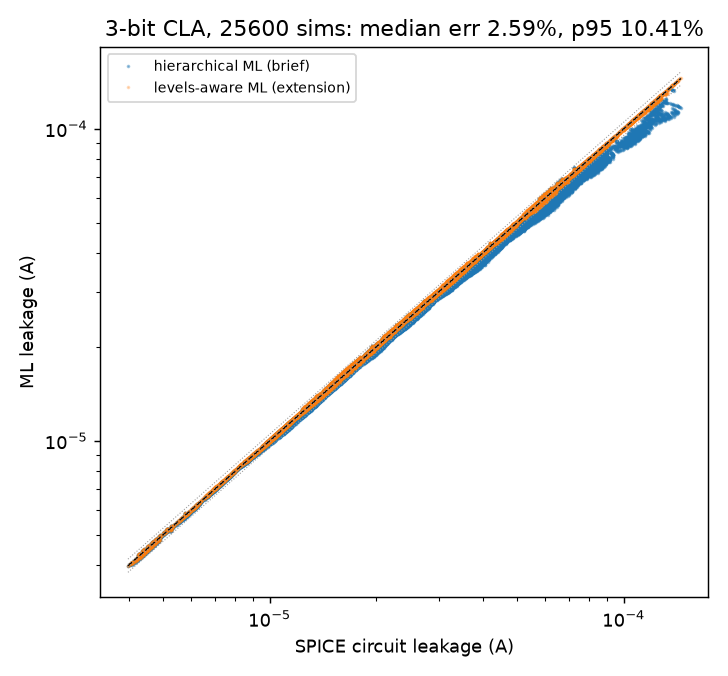
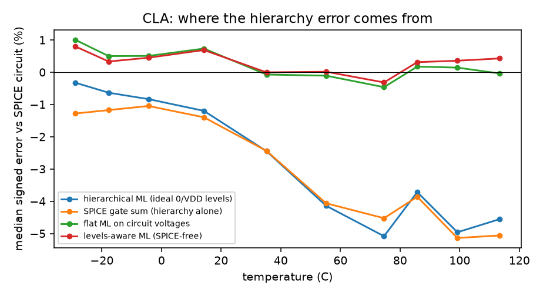
Comparison with the gates. The hierarchical estimate has a mean accuracy of 96.41 % (median error 2.59 %, bias -2.56 %), which is below the gate level. Table 8 separates the error into its causes. The ML error alone (ML gate sum against ngspice gate sum) has a median of 0.68 % and a mean accuracy of 99.13 %. The hierarchy error alone (ngspice gate sum against the ngspice circuit) has a bias of -2.64 % and a 95th percentile of 10.04 %, and it does not depend on the ML models. Flat ML, which applies the models to all 204 transistors at the voltages of the ngspice circuit, has a median error of 0.68 %, against 0.69 % for the gates, so the transistor models are as accurate inside the large circuit as in the gates.
The bias of the hierarchy changes with temperature, from
-1.1 % below 0 °C to
-4.7 % above 80 °C (median of the ngspice
gate sum against the ngspice circuit). The cause is the level of the logic signals between gates. In ngspice, a
logic 0 at a gate output sits a few to tens of mV above ground and a logic 1 sits below VDD (Figure 12),
and the offset grows with temperature. The next gate's OFF transistor has this offset on its gate, and its
sub-threshold current depends exponentially on the gate voltage (assumed physical model). The circuit therefore
leaks more than the sum of the ideal-input gate leakages. The levels-aware hierarchy of Section 7.2 removes the bias
without a model of loading between gates. Per vector, the median error ranges from 1.40 %
(inputs 0001111) to 3.71 % (inputs 0110111); results/circuit_results.csv
lists all 128.
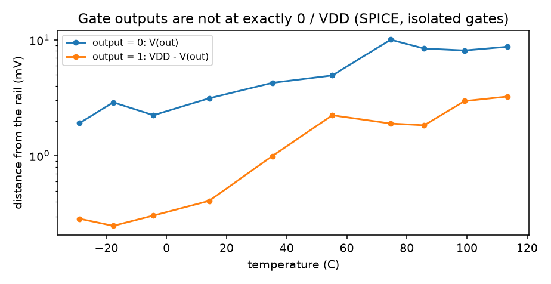
Where. At gate level, the median |error| is 1.03 % below 0 °C (95th percentile 3.18 %) and 0.57 % above 40 °C (2.05 %). Above 1.05 V the 95th percentile is 3.17 %, and below 0.95 V it is 2.04 %. Over the 3,600 gate simulations, |error| has a correlation of -0.24 with T and 0.13 with VDD. For the ten process parameters, the largest correlation magnitude is 0.10 with the signed error and 0.06 with |error|. The eight largest errors (Table 9) occur at corners with T from -24 to -1 °C and VDD from 1.083 to 1.089 V.
| Gate | inputs | corner | T (°C) | VDD (V) | NMOS vth0 | PMOS vth0 | error % |
|---|---|---|---|---|---|---|---|
| INV | 1 | 76 | -24.0 | 1.089 | 0.497 | -0.428 | +5.73 |
| AND2 | 00 | 76 | -24.0 | 1.089 | 0.497 | -0.428 | +5.73 |
| AND2 | 10 | 76 | -24.0 | 1.089 | 0.497 | -0.428 | +5.71 |
| AND2 | 01 | 76 | -24.0 | 1.089 | 0.497 | -0.428 | +5.40 |
| NOR2 | 01 | 76 | -24.0 | 1.089 | 0.497 | -0.428 | +5.18 |
| OR2 | 00 | 76 | -24.0 | 1.089 | 0.497 | -0.428 | +5.08 |
| INV | 0 | 184 | -1.0 | 1.083 | 0.435 | -0.420 | +4.97 |
| OR2 | 11 | 184 | -1.0 | 1.083 | 0.435 | -0.420 | +4.97 |
Why. We explain the pattern with three causes (assumed). (1) The OFF currents at low temperature are the smallest in the dataset, and log G changes fastest with Vth/VT there, so a given error in log G gives a larger relative error in the current. (2) At high VDD, drain-induced barrier lowering and GIDL make the OFF current depend more steeply on Vds at the point where the gate operates (Vds = VDD). (3) Cold and high-VDD corners lie in the part of the 12-dimensional input box where the uniform training data is thinnest. At transistor level, the highest 95th-percentile test error is 3.92 % for NMOS ON Id (Table 3).
A reference error. For INV with A = 1 at corner 198 (112 °C, 1.088 V), ngspice with its default
Newton start converged to a spurious operating point, which gave an error of +126 % against the ML estimate. A
sweep of V(out) with a forcing source (simulated) shows a single KCL root at 42 mV (3.58 µA). The default
start settles at a narrow kink of the model near 22 mV (1.85 µA). We start every gate and circuit
simulation from a logic-level .nodeset, which removes this effect. Of the 3,600 gate points, only this
one changed by more than 0.1 %, and no CLA point changed (development log, CHANGES.md).
Circuit level. The CLA error of the brief's method has a bias of -2.64 % that changes with temperature (Section 5). With the levels corrected (Section 7.2), the median CLA error is 0.66 %, against a gate-level median of 0.69 %.
At DC, the ML terminal currents into every internal node sum to zero. leakml/solve.py solves this KCL
system for all unknown nodes at once with a damped Newton method: a finite-difference Jacobian, and each step
limited to 50 mV as in SPICE. It runs on all corners together and iterates only on the rows that have not
converged. The initial guess puts logic nodes at their rails and stack nodes at the rail of their ON neighbour. The
solved node voltages differ from ngspice by at most 2.47 mV, and the leakage computed from them has a
mean accuracy of 99.12 % (99.10 % with the ngspice voltages).
The same solver supplies the gate-input levels of the CLA hierarchy. We visit the gates in topological order and solve each one with its inputs set to the ML-estimated output voltages of its drivers instead of an ideal 0 or VDD. Rows with the same corner and input voltages are solved once. Over the 42 gates the solver needs at most 12 iterations, and 0 rows remain unconverged (largest residual 6.46×10-14 A, from the solver statistics). The estimated gate-output voltages differ from the ngspice circuit by 0.044 mV in the median and 2.90 mV at most. The estimated CLA leakage has a mean accuracy of 99.21 %, with median error 0.66 %, 95th percentile 2.18 %, maximum 3.52 % and bias +0.28 %. Flat ML on the ngspice voltages has a mean accuracy of 99.14 %. The levels-aware estimate uses no ngspice voltage as input, so the whole chain from the model card to the circuit leakage runs on the four ML models.
In standby, a block can be parked at the input vector that leaks least. The mean leakage of the 128 CLA vectors spans a factor of 1.22 (simulated). The Spearman correlation between the ML ranking of the vectors and the ngspice ranking is 1.000 for the levels-aware estimate and 0.970 for the ideal-level hierarchy. The estimated minimum-leakage vector is 1001000 for the ideal-level hierarchy and 1001000 for the levels-aware estimate, and ngspice gives 1001000. When the best vector is chosen separately in each corner, the levels-aware estimate finds the ngspice optimum in 99 % of the corners, and its leakage is at most 0.18 % above the optimum.
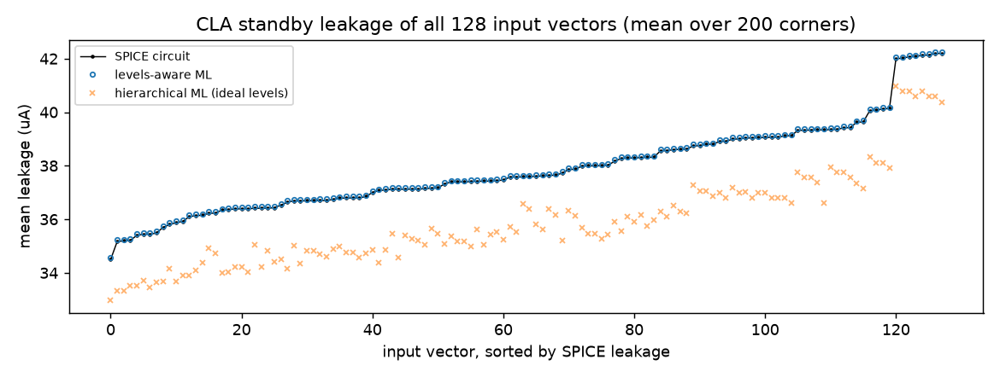
ngspice reports only total currents. The bipole models split the leakage into mechanisms. The following shares are averages over the 18 gate cases at nominal process and VDD (estimated):
In NAND2 00 and NOR2 11 the stack reduces the channel current, and tunnelling has a share of 63 % and 55 % at 20 °C.
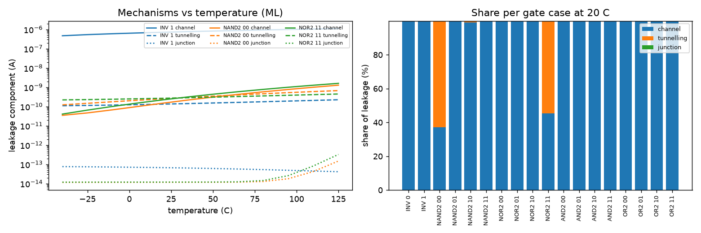
We moved each PVT parameter by itself (process parameters and VDD by ±10 %, T to −40 and 125 °C) and averaged the estimated levels-aware CLA leakage over all 128 vectors. The four largest effects are VDD -10% (0.37×), VDD +10% (2.61×), pmos vth0 +10% (0.44×), pmos vth0 -10% (2.18×). VDD has the largest effect: +10 % gives 2.61× and −10 % gives 0.37×. We assume that the cause is drain-induced barrier lowering, which lowers the threshold of the OFF devices at higher Vds (assumed). PMOS vth0 and temperature follow, in line with the exp(−Vth/nVT) dependence of the sub-threshold current (assumed). PMOS parameters have larger effects than NMOS parameters: −10 % vth0 gives 2.18× for PMOS and 1.29× for NMOS. We assume that this is because the PMOS devices are twice as wide and carry more of the CLA leakage (assumed). Oxide thickness, mobility and junction depth each change the leakage by at most 9.6 %.
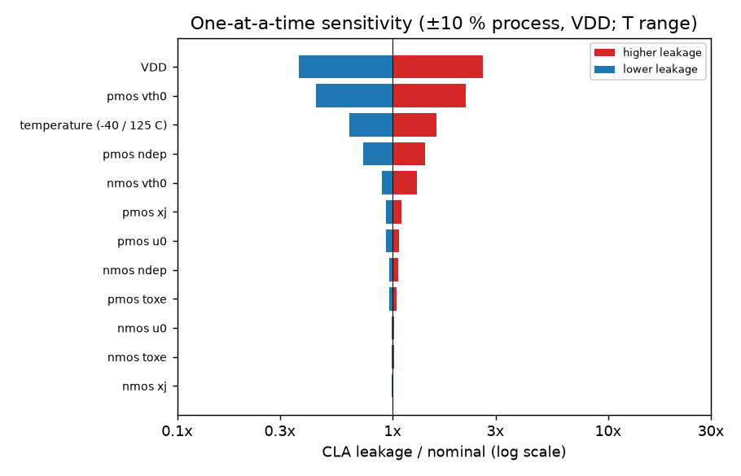
Evaluating the trained models is cheap enough for large statistical studies. We estimated the levels-aware CLA leakage at 5,000 new random corners for the minimum- and maximum-leakage vectors. For vector 1001000, the median is 2.83×10-5 A and the 99th percentile 4.38× the median (lognormal σ = 0.79; the 200 SPICE corners give median 2.95×10-5 A, KS p = 0.93). For vector 1110001, the median is 3.50×10-5 A and the 99th percentile 4.19× the median (lognormal σ = 0.77; the 200 SPICE corners give median 3.64×10-5 A, KS p = 0.89). The distribution is right-skewed: the 99th percentile is 4.19 to 4.38 times the median.
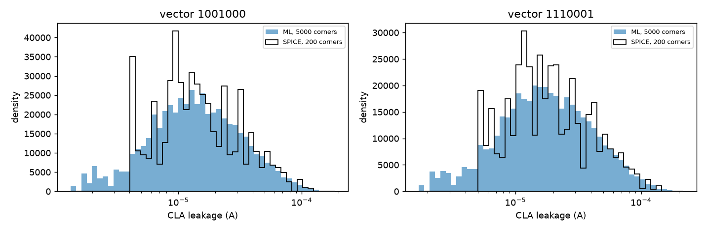
Each of the five ensemble members gives its own gate leakage, and the spread between the members can serve as an error bar. The Spearman correlation between the spread and the actual |error| is 0.17. The 20 % of the points with the smallest spread have a median |error| of 0.60 %, and the 20 % with the largest spread have 0.79 %. We assume that the part of the error shared by all members comes from the training distribution, and the spread cannot show this part (assumed).
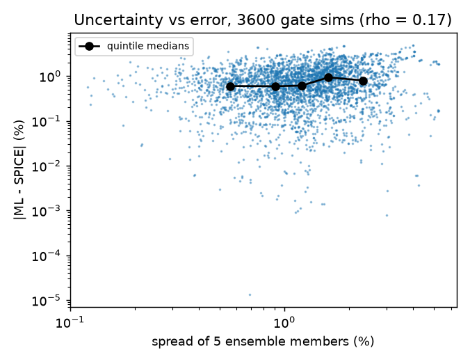
ngspice needs 48.07 ms of CPU time per CLA operating point (measured on macOS-27.0.1-arm64-arm-64bit-Mach-O). The ML models need 4.257 ms per point on the same 204 transistors when the node voltages are given, which is 11 times less CPU time. The lookup of the brief's hierarchy takes 1.7 s for all 25,600 points once the gate tables exist. The levels-aware solve of all 25,600 points takes 402 s on one core, which is 3.1 times less CPU time than ngspice. In wall-clock time, ngspice took 112 s on 11 cores. Training the 140 sub-models took 2329 s of wall-clock time (measured; the sub-models were trained in parallel).
We also built the brief's other test circuit from the same library: a balanced tree of seven XORs of four NAND2 each (28 gates, 112 transistors). We simulated it in ngspice for all 256 vectors at the same 200 corners (51,200 points) and applied the models without retraining or other changes. The brief's hierarchy has a mean accuracy of 94.80 % (bias -4.04 %), and the levels-aware hierarchy has 99.24 % (median error 0.65 %, 95th percentile 1.96 %). The ranking of the two hierarchies is the same as for the CLA.
| Comparison | bias % | median err % | p95 err % | max err % | mean acc % |
|---|---|---|---|---|---|
| hierarchical ML (gate sum) vs SPICE circuit | -4.04 | 4.04 | 14.29 | 26.30 | 94.80 |
| SPICE gate sum vs SPICE circuit (hierarchy error) | -4.08 | 4.08 | 13.82 | 25.94 | 94.74 |
| hierarchical ML vs SPICE gate sum (ML error) | +0.14 | 0.71 | 2.35 | 4.15 | 99.12 |
| levels-aware ML hierarchy vs SPICE circuit (SPICE-free) | +0.31 | 0.65 | 1.96 | 3.11 | 99.24 |
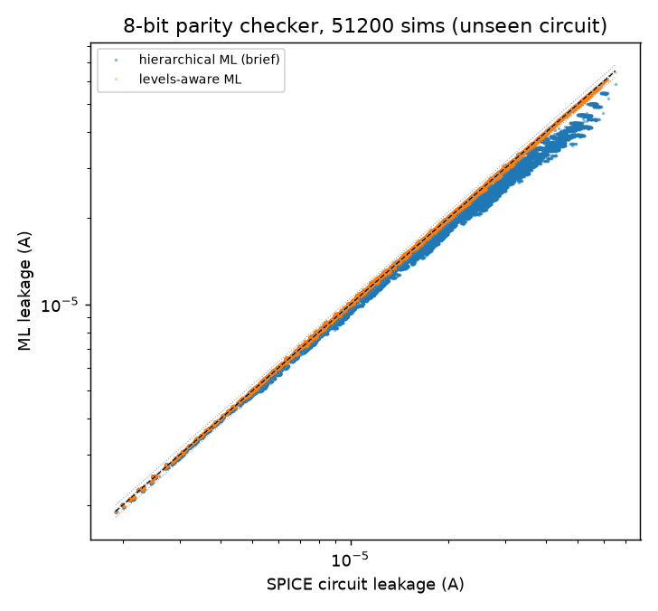
All scripts run in order (./run_all.sh --full) from the model file with fixed seeds. The fast path
(./run_all.sh) reuses the stored data, the saved models and the cached CLA ngspice reference, and reruns
the validation in minutes. The test file tests/test_pipeline.py defines 14 test functions, and the
development log reports 26 collected test cases. They check the KCL balance of the saved models, the passivity of
the bipoles, the identity of the netlist and ML topologies, the truth tables, the addition of the CLA, the BSIM4
width clamp, the convergence of the solver, and the parity function of the parity checker. The repository is at
https://github.com/Shr1yaK/leaky-lima-leakage-estimation/.
| # | Deliverable | Where |
|---|---|---|
| 1 | Datasets (4 × 10,000 rows) | data/{nmos,pmos}_{on,off}.csv |
| 2 | Example netlists | netlists/single_*.cir, gate_*.cir, cla3.cir |
| 3 | Kirchhoff check, trend plots | results/kirchhoff_check.csv, figures/data_check_trends.png (Table 1, Figure 1) |
| 4 | Model comparison | results/model_comparison.csv (Table 2) |
| 5 | Chosen models | results/chosen_models_test.csv, figures/pred_vs_spice_*.png, saved_models/*.joblib (Table 3) |
| 6 | Gate results | results/gate_results.csv, results/gate_samples.csv (Table 7) |
| 7 | Gate parity plot | figures/gate_parity.png |
| 8 | CLA results | results/circuit_summary.csv, circuit_results.csv, figures/circuit_parity.png (Table 8) |
| 9 | Code | 00_ … 08_*.py, leakml/, run_all.sh, tests/ |
| 10 | Report | report/Leaky_Lima_Report.pdf (this document, generated by report/build_report.py) |